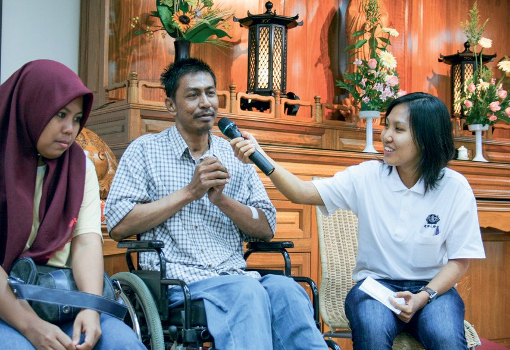
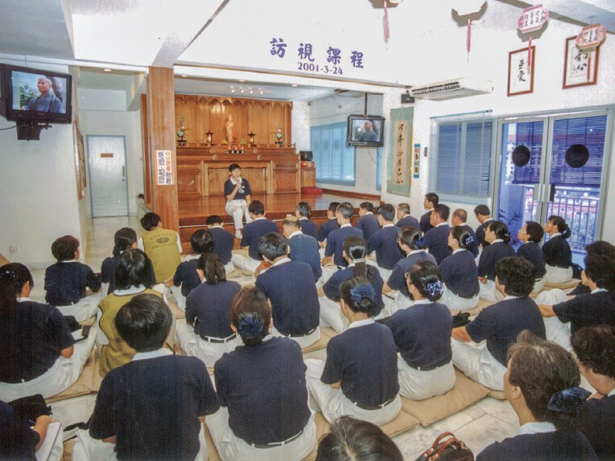
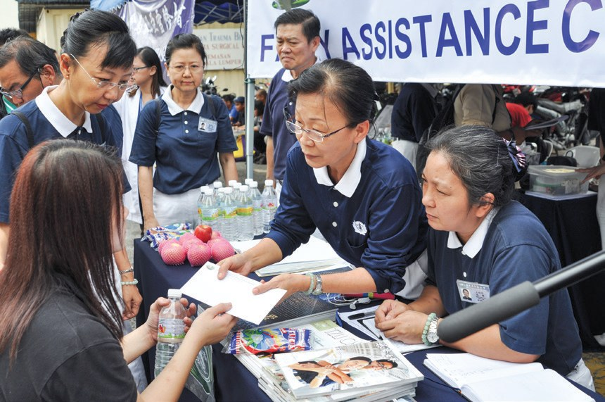

慈悲心念
愛灑大馬（上）
想幫助一個人，光有熱心夠不夠？

先別急著下結論，讀完再說說你的想法～
這一篇講雪隆慈濟的慈善怎樣起步：第一個個案、洗腎補助、訪視的規矩，還有第一次急難救助。
你會看到志工從「記在本子上」，慢慢走到一整套制度。
下面是原書的節錄，紅色底線是我們替你標出的轉折點。
讀之前：你覺得幫助別人，最需要的是什麼？
送到每一個暗角
慈善從哪裡開始？先認識兩位被安置的女子。閱讀引導
慈濟志業始於慈善，馬來西亞慈濟人秉持證嚴上人「尊重生命」、「眾生平等」的大愛精神，及「拔苦予樂」的慈心悲懷、不分種族、不分宗教，將慈濟的人間溫情，送到每一個有需要的暗角。

那要從哪裡開始呢？
1992年7月，臺灣慈濟委員陳錦花等人，受邀前往吉隆坡佛教總會舉辦講座……接引了吉隆坡實業家林香蓮、楊碧雲及臺商蘇秀華等人。她們開始在吉隆坡和巴生進行慈善工作，關懷殘智障院、老人院及孤老貧病的照顧戶。
森美蘭州馬口新村的葉秀燕，是慈濟在吉隆坡補助的第一個個案。
原文・p.32她小時候被父母賣給葉家當養女，因遭虐待，導致精神失常。養父母雙亡後，只能依靠兄長照顧，她常常赤裸身軀滿街亂逛，故被兄嫂關起來，處境淒涼。經由原生家庭的姊姊向志工提報，希望志工能幫助她。

又被關起來……
於是，志工黃金蓮在家屬同意下，在1992年3月28日，將葉秀燕安置在巴生恩典福利之家。
還有一位罹患精神分裂症又身懷六甲的張秀玲，在1994年7月20日被刊登在《南洋商報》上，但無親屬出面。……案主精神失常，對懷孕似懂非懂……志工決定提供濟貧金300令吉，並在8月將她安置到巴生恩典福利之家。

志工就成了她的依靠。
直到張秀玲在1995年3、4月間順利分娩後，志工改為不定期探訪，或該院護士有需求時，才安排前往。
腎友的平臺
洗腎個案越來越多，志工怎樣陪伴他們？閱讀引導
在1993年至2006年期間，洗腎個案都是由外界提報，需要補助的人數不多。截至2007年6月，吉隆坡分會（2010年正名為雪隆分會）共有五十一宗洗腎個案，其中就有三十二宗是一月至六月提報的新個案。

半年就多了三十二宗！
慈濟也為腎友打造一個溝通的平臺，2006年11月起，吉隆坡慈濟每月定期舉辦腎友聯誼會，邀請腎友照顧戶及親屬，與訪視志工齊聚一堂，彼此交流生活上及心境的改變，互相加油打氣。

多數腎友是透過民間洗腎中心提報，表示慈濟已和相關單位建立默契，讓面對困境的病患有管道向慈濟申請補助。截至2014年12月，吉隆坡分會及馬六甲分會所屬據點共補助315位洗腎病患。
從本子到表格
每個個案都要調查、開會；新志工有人帶著學。閱讀引導
為了客觀瞭解個案背景及狀況，志工除了和案主接觸外，也學習觀察周遭環境，與村長、親友及善心人士互動，多方收集資料後再作出評估，並提呈到會議上。
還要問村長、親友。
早期志工前往照顧戶家中，多是將個案資料記錄在本子上；志工簡慈露依慈濟花蓮本會個案提報申請表、濟助調查表、家庭功能評估表、個案記錄表、複查報告表格和付費收據等範本，陸續調整為適合本地使用的表格。
變成一整套表格！

「慈濟在進行訪視，任何個案均須經過調查、開會討論。」
1997年訪視研習會上，簡慈露對九十位幹部說・p.36吉隆坡分會於2009年定下每月第一個星期日為「慈善日」，由資深志工就近帶領新進者分組投入居家訪視。每個月設定不同主題，與照顧戶分享慈濟故事，如日存五毛錢的「竹筒歲月」、「惜福護生」等等。
時至今日，志工持續全面地接引照顧戶成為慈濟會員，啟發照顧戶的善念，讓他們知道「翻轉手心」就能助人的正向心態。
原文・p.38也能伸手去幫別人？
勘災、造冊、發放
從一場村子裡的火災，到雲頂高原的巴士意外。閱讀引導
1994年12月28日，位於馬來西亞雪蘭莪斯里沙迪村發生火災，燒毀七間木屋，造成二十一戶人家共一百零四人無家可歸。……在村長巴拉先生的協助下，吉隆坡志工於次日立即前往，並依名冊發放慰問金及慰問信，此為慈濟在當地第一次急難救助事件。
志工陸續從鄰里、社區甚至跨州發生的火災、水災、風災、疫情事件中，建立起「勘災、造冊、發放」的基本急難救助模式。
原文・p.38原來有三個步驟！
熱帶風暴「格列」於1996年12月26日凌晨襲擊沙巴州，造成沙巴州二十年來最嚴重的風災……河岸九個村莊五百間民房全毀，兩百多人被洪水沖走，數千人無家可歸。
兩百多人被沖走！
當時根地咬並未設立聯絡點，馬六甲志工劉濟雨帶領亞庇志工於隔日趕往災區勘察。慈濟人於災後一週內緊急支援四百箱礦泉水，鑑於災區遼闊，最後擇定以貧困重災區的卡拉布奈村為主，發放馬幣四萬八千令吉。
志工還是隔天就趕去了。
2013年8月21日，一輛載客巴士途經雲頂高原時，失控墜入深谷，造成三十七人罹難，十六人輕重傷。

「幸好你們連椅子都準備好。」
家屬低聲述說・p.40一個看似微不足道的舉動，讓面對生離死別備受煎熬的心，暫時有個依靠處。
猜一猜閱讀引導
為了陪伴罹難者家屬，雪隆分會動員了多少人次的志工晝夜輪值？
有人臨時向公司請假前來；有人徹夜未眠接力輪班，圓滿守夜行動，只期望在家屬最傷痛的時刻，能有依靠的肩膀度過難關。
願亡者靈安，生者心安。
原文・p.41停一停：誰讓你記住了？閱讀引導
選一位你印象最深的人。沒有標準答案。
這些人做的事，有的大、有的小。哪一件讓你最有感覺？

一起回頭看看吧～
回望
依本章原文整理，每一條都標了原書頁碼。閱讀引導
背後原因
為什麼要有制度

小川個案越來越多，志工怎麼辦？
- 個案越來越多
愛灑茶會讓越來越多人感動，也提報了許多個案。p.32
- 遇到疑問
志工初接觸時有不解的訪視疑問，靠檳城、馬六甲志工支援。p.32
- 建立制度
表格、個案討論會議、訪視培訓，每個個案都要調查、開會。p.35–36
後續發展
慈善一步步長出來

小禾這些年發生了哪些「第一次」？
- 1992
第一個補助個案：葉秀燕。p.32
- 1994
斯里沙迪村火災，第一次急難救助。p.38
- 1996
根地咬山洪，志工隔日勘察、發放。p.39–40
- 2001
成立急難小組，籌劃急難志工組織。p.39
- 2006
每月舉辦腎友聯誼會。p.33
- 2009
每月第一個星期日定為「慈善日」。p.37
- 2013
雲頂巴士墜谷，三百人次志工守護家屬。p.40–41
急難三步驟
書裡的例子
小川三個步驟，各在哪裡做到了？
- 第一圈勘災
根地咬山洪，劉濟雨帶亞庇志工隔日趕往災區勘察。p.40
- 第二圈造冊
斯里沙迪村火災，志工依名冊發放慰問金及慰問信。p.38
- 第三圈發放
擇定卡拉布奈村，發放馬幣四萬八千令吉。p.40
以上只整理本章寫到的事；書裡沒寫到的，我們不替它下結論。
回頭看讀前的選擇閱讀引導
書裡寫每個個案都要經過調查、開會討論（p.36），也建立了「勘災、造冊、發放」的模式（p.38）；雲頂巴士意外時，志工連椅子都先準備好（p.40）。熱心、方法、及時，你覺得哪一樣最難？
為什麼能讓人覺得有依靠？
只有你自己看得到喔！
準備好了就一起出發～